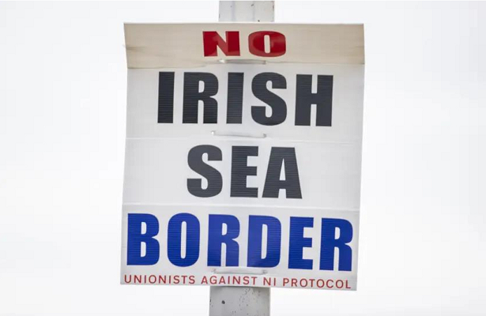

Rússia e China inauguram ponte entre os dois países para ampliar comércio
10/06/2022 14h08 - Atualizado 10/06/2022 14h08
Rússia e China inauguraram uma nova ponte transfronteiriça no Extremo Oriente nesta sexta-feira, 10. Segundo autoridades russas, a iniciativa visa impulsionar o comércio entre Moscou e Pequim, que anunciaram uma parceria “sem limites” pouco antes da eclosão da guerra na Ucrânia.
A ponte liga a cidade russa de Blagoveshchensk à cidade chinesa de Heihe, através do rio Amur, conhecido na China como Heilongjiang. Ela tem pouco mais de um quilômetro de extensão e custou 19 bilhões de rublos (RS$ 1,7 bilhão), informou a agência estatal de notícias russa RIA.
No mundo dividido de hoje, a ponte Blagoveshchensk-Heihe entre a Rússia e a China carrega um significado simbólico especial”, disse Yuri Trutnev, representante do Kremlin no Extremo Oriente russo.
Em meio a uma queima de fogos, caminhões de carga de ambas as extremidades cruzaram a ponte de duas pistas enfeitada com bandeiras nas cores dos dois países, mostraram imagens de vídeo da abertura. A ponte estava em construção desde 2016 e foi concluída em maio de 2020, mas sua abertura foi adiada por restrições da Covid-19, disse a BTS-MOST, empresa que construiu a ponte no lado russo.
A construtora acrescentou que a ponte reduziria a distância de viagem de mercadorias chinesas para o oeste da Rússia em 1.500 quilômetros. Os veículos que atravessam a ponte devem pagar um pedágio de 8.700 rublos (R$ 749), um preço que deve cair à medida que a arrecadação da taxa comece a compensar o custo da construção.
O ministro dos Transportes da Rússia, Vitaly Savelyev, disse que a ponte ajudaria a aumentar o comércio bilateral anual para mais de 1 milhão de toneladas de mercadorias. A expectativa do Kremlin é que o fluxo de commodities com Pequim, grande comprador de recursos naturais e produtos agrícolas russos, atinja US$ 200 bilhões até 2024.
Durante a inauguração da nova passagem transfronteiriça, o vice-primeiro-ministro chinês, Hu Chunhua, declarou o deseja de seu país em aprofundar a cooperação prática com a Rússia em todas as áreas.
Os dois países anunciaram uma parceria “sem limites” em fevereiro, pouco antes do presidente Vladimir Putin enviar suas tropas para a Ucrânia. A China, que não condenou a invasão russa, publicou um comunicado em meados de abril, dizendo que “continuará a fortalecer a coordenação estratégica” com Moscou, independentemente de como o “cenário internacional possa mudar”.
Na ocasião, autoridades do governo chinês citaram um aumento de quase 30% no comércio entre os dois países durante o primeiro trimestre do ano, atingindo cerca de US$ 38,2 bilhões, como uma prova da “tremenda resiliência” de sua cooperação bilateral.
Demonstrando oposição às sanções econômicas do Ocidente contra Moscou, o governo chinês classificou o corte de importações da Rússia como uma maneira ineficaz de resolver a crise.